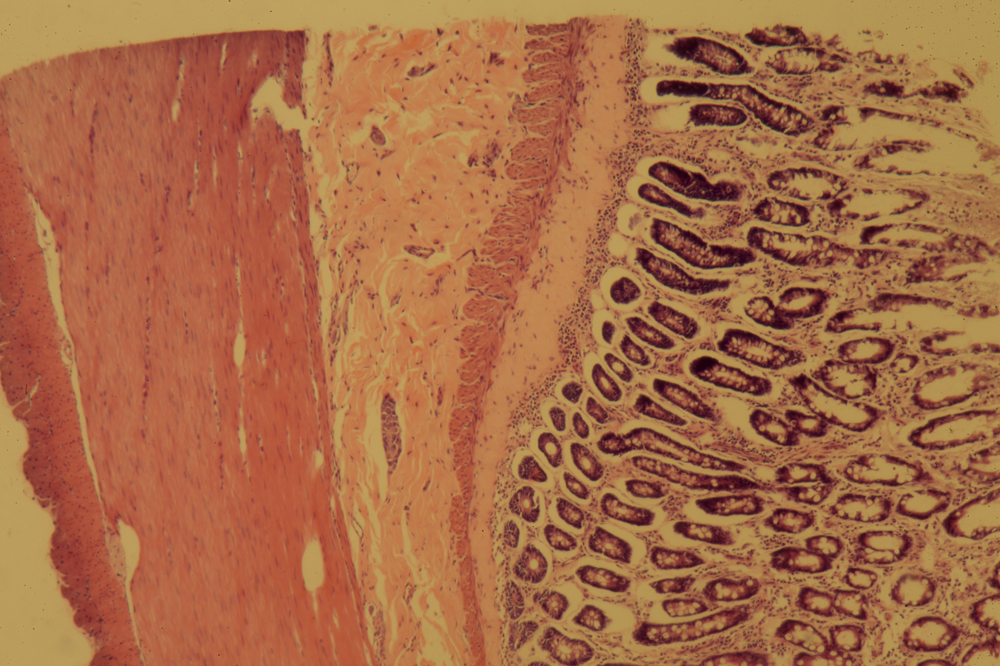

Human Pathology
Mammalian/Avian Pathology
Fluorescence
Invertebrates
Equipment
Small Intestine (Dog)

Bright Field. Olympus SPlan 4x Objective.
Bright Field. Olympus SPlan 4x Objective.
Bright Field. Olympus SPlan 20x Objective.
Bright Field. Olympus SPlan 20x Objective.